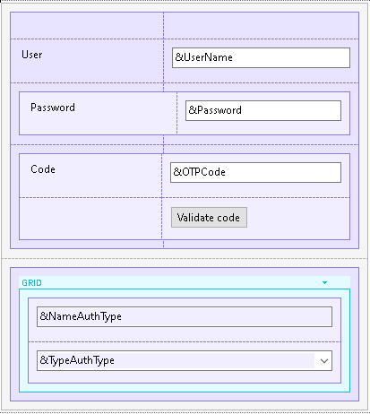

In this article, you will find the steps to use Two Factor Authentication (2FA) for mobile:
First, you must configure an authentication type to allow using Two Factor Authentication.
Also, you need to consider the following:
All the Events described below are in the same Panel.

The logic inside this event will include a call to a method of the Actions external object named LoginExternal.
The first parameter is based on the GAMAuthenticationTypes domain, and its value should be GAMLocal.
If the LoginExternal method returns True, the event GeneXusSecurity.GAMLoginEvents.TwoFactorAuthenticationRequested is triggered.
This event calls the "Display2FAStep2" subroutine to change the Panel, so it is prepared to display the second factor authentication inputs. In addition, this event also warns the user to validate the second factor authentication.
Event 'BtnNext'
Composite
GeneXus.Common.UI.Progress.ShowWithTitle("Connecting...")
&isLoginOK = GeneXus.SD.Actions.LoginExternal(GAMAuthenticationTypes.GAMLocal, &UserName, &UserPassword, &LoginExternalAdditionalParameters)
GeneXus.Common.UI.Progress.Hide()
If &isLoginOK
//OK
Else
GAMSDGetLastErrors(&Messages)
Endif
EndComposite
Endevent
Event GeneXusSecurity.GAMLoginEvents.TwoFactorAuthenticationRequested
Msg("validate second factor authentication")
Do "Display2FAStep2"
&Login2FAStep = 2
GeneXus.Client.ClientStorage.Set(!'Login2FA-Step', &Login2FAStep.ToString())
GeneXus.Client.ClientStorage.Set(!'Login2FA-UserName', &UserName.Trim())
EndEvent
In this event, the external object method LoginExternal is used to validate the second factor authentication. Therefore, the &LoginExternalAdditionalParameters.OTPStep property is defined as "2" because the event is validating the OTP code of the second factor authentication.
Besides, the &password parameter is changed to &OTPCode in the LoginExternal method.
Event 'BtnValidCode'
Composite
GeneXus.Common.UI.Progress.ShowWithTitle("Connecting...")
&LoginExternalAdditionalParameters = new()
&LoginExternalAdditionalParameters.AuthenticationTypeName = !"OTP-2FA"
&LoginExternalAdditionalParameters.OTPStep = 2
&LoginExternalAdditionalParameters.UseTwoFactorAuthentication = True
GeneXus.SD.Actions.LoginExternal(GAMAuthenticationTypes.OTP, &UserName, &OTPCode, &LoginExternalAdditionalParameters)
GeneXus.Common.UI.Progress.Hide()
Do "Set2FAStep1"
Return
EndComposite
Endevent
In cases where the app is running in the background, it is important to keep the state of the login process. This means that when users have been validated in the first authentication factor, they must be able to open another app (if required) to complete the second factor authentication without losing the validation that has already been done in the first factor authentication.
To solve this problem, the "ClientStorage" external object is used.
Event ClientStart
&UserName.Enabled = True
&UserPassword.Visible = True
BtnNext.Visible = True
TblCode.Visible = False
&Login2FAStep.FromString(GeneXus.Client.ClientStorage.Get(!'Login2FA-Step'))
If &Login2FAStep = 2
Do "Display2FAStep2"
&UserName = GeneXus.Client.ClientStorage.Get(!'Login2FA-UserName')
Endif
Endevent
This event calls the subroutine "Set2FAStep1" to cancel the login process.
Event 'BtnBack'
Composite
Do "Set2FAStep1"
Return
EndComposite
Endevent
The above events call two different subroutines.
The "Display2FAStep2" subroutine makes changes in the elements of the Panel, so that the user can interact with both of the authentication factors.
Sub "Display2FAStep2"
&UserName.Enabled = False
&UserPassword.Visible = False
BtnNext.Visible = False
TblCode.Visible = True
EndSub
The "Set2FAStep1" subroutine reset the steps of the login process, leaving the Panel by default.
Sub "Set2FAStep1"
&Login2FAStep = 1
GeneXus.Client.ClientStorage.Set(!'Login2FA-Step', &Login2FAStep.ToString())
GeneXus.Client.ClientStorage.Set(!'LoginOTP-UserName', "")
EndSub
This feature is available since GeneXus 17 Upgrade 9.
| Backlinks | |
| GAM - One Time Password for mobile | Toc:GeneXus Access Manager (GAM) |